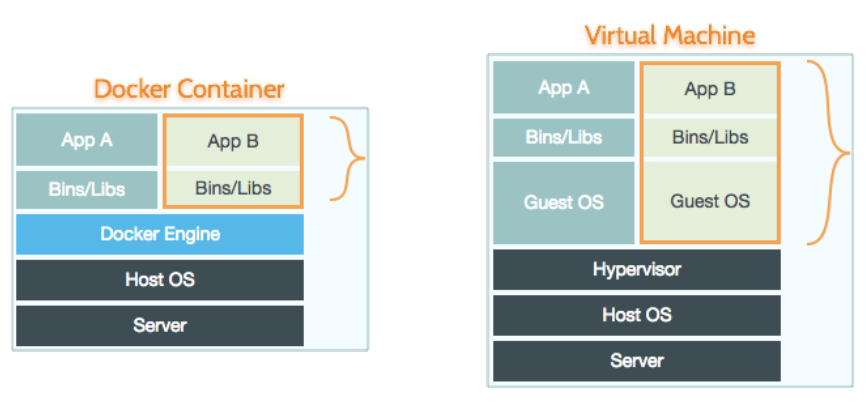
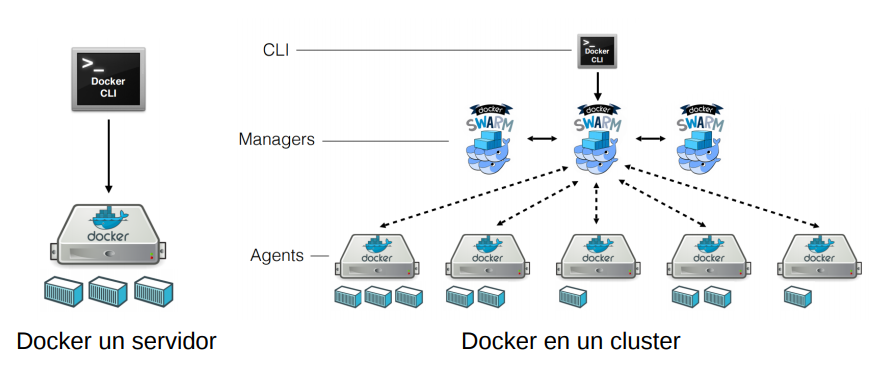

Introducción
La idea detrás de Docker es crear contenedores ligeros y portables para las aplicaciones software que puedan ejecutarse en cualquier máquina con Docker instalado, independientemente del sistema operativo que la máquina tenga por debajo, facilitando así también los despliegues y la integración continua.
Imagen Docker
Es una plantilla para un contenedor. Tiene So como Ubuntu, Debian, librería como Java y app .jar.
Docker Hub
Servicio remoto que se usa para almacenar y traer imagenes.
Contenedor Docker
un contener se crea a partir de un imagen docker, es equivalente a una máquina virtual. Cuando se modifica el contenido, se modifica el contenedor y la imagen no, se puede ejecutar, pausar o parar.
Docker Engine

La virtualización y los contendores facilitan la gestión del entorno de CI (Continuous Integration) porque son los propios desarrolladores.
Ejemplo
docker run alpine ls -l
Crea un nuevo contenedor y lanzarlo, cuyo imagen se llama alpine, el imagen es descargado si no está almacenado en la máquina local, pasamos el comando ls -l que va a ejecutar en dicho contenedor.
docker run alpine seqvence/static-site
Ejecutamos el contenedor en background.
docker ps
Listar conjunto de contenedores que están ejecutando.
docker stop a7a0e504ca3e
Parar un contenedor identificado por a7a0e504ca3e
docker rm a7a0e504ca3e
Eliminar un contenedor identificado por a7a0e504ca3e
docker run --name static-site -e AUTHOR="Your Name" -d -p 9000:80 seqvence/static-site
Especificamos explicitamente el nombre de contenedor, ejecutarlo como daemon, y mapear el puerto local 9000 al puerto 80 del contenedor.
docker stop static-site
Parar un contenedor
docker pull ubuntu:12.04
Descargar la imagen de cierta versión.
DockerFile
Archivo que usa para descripbir un nuevo imagen.
Crear Imagen
En la carpteta de Dockerfile ejecutamos
docker build -t myfirstimage .
Genera el imagen correspondiente
Macro
- FROM: Imagen base
- COPY: Copiar archivos desde la carpeta de Dockerfile
- RUN ejecutar los comandos
- EXPOSE: puertos publicos
- CMD: comandos a ejecutar al crear la imagen
publicar nuestro imagen
docker build t <YOUR_USERNAME>/myfirstapp .
Volúmenes de datos
Desde un contenedor se puede acceder al contenido de una o varias carpetas del host. ● Eso permite que el contenedor pueda leer su contenido y también pueda generar nuevos ficheros que guarda en el host. Los volúmenes de datos se configuran con el comando -v host_folder:cont_folder.
docker run d p 9000:80 v $PWD:/usr/share/nginx/html nginx
Servir por http un contenido estático que tengamos en el disco duro
Aplicaciones multicontenedor
Es recomendable que cada contenedor se usa para un único proceso, pero es habitual que las aplicaciones tengan varios procesos. Pero es habitual que las aplicacaciones tengan varios procesos (web + bd). Docker-compose nos permite definir un conjunto de contenedores que colaboran entre si formando una aplicación. El fichero docker-compose.yml define los contenedores y las relaciones entre ellos.
Para ejecutar la aplicación
dockercompose up d
Docker Swarm
Servicio Local que se usa para controlar docker, manejar imagenes, manejar contenedores.
